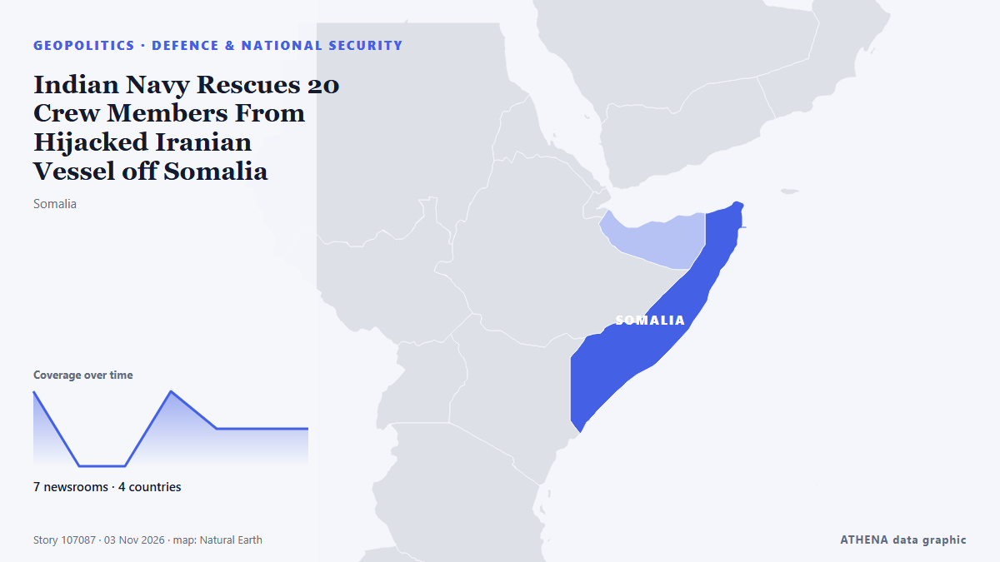

Verteidigung und Sicherheit
GesponsertPräsentiert von  Cybernetics and Artificial Intelligence Lab Welcome to the Cybernetics and Artificial Intelligence Laboratory, established at the Department of Business Administration of the National
Cybernetics and Artificial Intelligence Lab Welcome to the Cybernetics and Artificial Intelligence Laboratory, established at the Department of Business Administration of the National
| 21. Okt. | 0 |
|---|---|
| 22. Okt. | 0 |
| 23. Okt. | 0 |
| 24. Okt. | 0 |
| 25. Okt. | 0 |
| 26. Okt. | 0 |
| 27. Okt. | 1 |
| 28. Okt. | 0 |
| 29. Okt. | 2 |
| 30. Okt. | 6 |
| 31. Okt. | 3 |
| 1. Nov. | 4 |
| 2. Nov. | 3 |
| 3. Nov. | 4 |
Schlagzeilen werden auf Englisch angezeigt, wie veröffentlicht.

Indian Navy Rescues 20 Crew Members From Hijacked Iranian Vessel off Somalia
Airborne commandos recapture fishing boat seized by pirates as attacks off the Somali coast rise to their highest level since 2013. von Kurdistan24 (English)
Missing woman’s brother recounts her fears as prosecution rests murder case against her husband
Defense attorneys for Naresh Bhatt will target testimony by forensic investigators. von Courthouse News
Hanwha Defense USA wins $269 mil. US Navy shipbuilding contract
Hanwha Defense USA (HDUSA), a subsidiary of South Korea's Hanwha Aerospace Co., has secured a $269 million contract to build a medium landing ship (LSM) for the U.S. von The Korea Times
Trial of accused USS Cole attack mastermind opens at Guantanamo
Jury selection began on Monday in the long-delayed trial of Abd al-Rahim al-Nashiri, the accused mastermind of the 2000 attack on the USS Cole warship that left 17 American sailors dead. von Al-Monitor
Algeria launches new cleanup of former French nuclear test site
Defense Ministry accuses France of withholding records and maps of radioactive waste burial sites. von Anadolu Agency (English)
Naval Group hands over second Hellenic Navy FDI frigate
On October 30, in Lorient, Naval Group delivered the second FDI frigate for the Hellenic Navy (FDI HN), HSNearchos. von Naval Today
Defense Minister: Iran’s combat power to be boosted for unrestricted response anywhere
Tehran, IRNA - Defense Minister Mehrdad Akhlaghi has vowed to resolutely pursue strengthening smart combat readiness and to fulfill the Leader’s strategy of a swift, effective, and proportionate… von IRNA (English)
Baker Mayfield's Buccaneers repeat rare 1974 NFL feat in 16-0 win over Falcons
In an extraordinary display of teamwork, on November 1, the Tampa Bay Buccaneers triumphed over the Atlanta Falcons without needing any completed passes. von Times of India
Japan can build defense edge on AI, Palantir CEO says
Japan's Defense Ministry is soliciting research proposals from private companies as part of efforts to develop small rockets that can. von Mainichi (English)
South Korean Group Wins Its First US Navy Medium Landing Ship Contract After Buying A Philadelphia Shipyard In 2024
TOTE Services, LLC, a leading U.S. maritime services company specializing in vessel construction management and ship management announced its first shipyard selection for the Medium Landing Ship… von Marine Insight
Russian Navy Cancels Modernization of Kirov-Class Battlecruiser Pyotr Velikiy
The Russian Navy has canceled modernization plans for the Kirov-class battlecruiser Pyotr Velikiy. von Naval News
Iran’s defense doctrine no longer bound by ‘geography of a threat’: Leader’s advisor
Tehran, IRNA - Mohammad Mokhber, senior advisor and aide to the Leader of the Islamic Revolution, said in a message that Iran’s defense doctrine is rapidly evolving and that the geography of a threat… von IRNA (English)
Dendias Sets 34-Month Timeline for Achilles Shield Air Defence
Nikos Dendias said the Achilles Shield air and anti-drone defence system will be fully operational within 34 months as deliveries arrive. von Greek City Times
Salesforce to buy Rune in its most significant national security deal
Salesforce has agreed to buy Rune Technologies. von The Next Web
Mohsen Rezaei: Saudi Fears Israel Will Target Türkiye
Iran’s security chief says Saudi Defense Minister Prince Khalid bin Salman told the Tehran meeting that Israel will go after Türkiye and then Saudi Arabia after Iran, a claim not yet confirmed by… von Kurdistan24 (English)
NATO says it has much to learn from Ukraine in field of innovation
The NATO Defence Innovation Accelerator for the North Atlantic and Ukraine have inked an agreement to jointly develop and test military technologies. von Ukrainska Pravda (English)
Rezaei: No Nuclear Doctrine Change Yet
Iran’s security chief says he has read Vance’s letter without replying, calls the shift in US tone a good sign, and says no formal decision has been made to change the nuclear doctrine, though… von Kurdistan24 (English)
Iran targeted US air defenses then hit aircraft and buildings on Mideast bases
Iran's strikes on more than two dozen U.S. bases in the Middle East focused on early-warning systems before hitting aircraft and buildings, causing billions of dollars in equipment damage, according… von Stuff